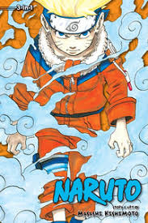
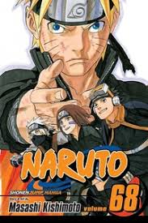
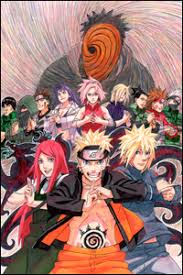

 Naruto is a Japanese manga series written and illustrated by Masashi Kishimoto. It tells the story of Naruto Uzumaki, a young ninja who seeks recognition from his peers and dreams of becoming the Hokage, the leader of his village. The story is told in two parts: the first is set in Naruto's pre-teen years,and the second in his teens. The series is based on two one-shot manga by Kishimoto: Karakuri (1995), which earned Kishimoto an honorable mention in Shueisha's monthly Hop Step Award the following year, and Naruto (1997).Naruto was serialized in Shueisha's shōnen manga magazine Weekly Shōnen Jump from September 1999 to November 2014, with its chapters collected in 72 tankōbon volumes.
 This one of the best-selling manga series of all time, having 250 million copies in circulation worldwide. It has become one of Viz Media's best-selling manga series; their English translations of the volumes have appeared on USA Today and The New York Times bestseller list several times, and the seventh volume won a Quill Award in 2006. Reviewers praised the manga's character development, storylines, and action sequences, though some felt the latter slowed the story down. Critics noted that the manga, which has a coming-of-age theme, makes use of cultural references from Japanese mythology and Confucianism.
 Viz Media licensed the manga for North American production and serialized Naruto in their digital Weekly Shonen Jump magazine. The manga adapted into two anime television series by Pierrot and Aniplex, which ran from October 2002 to March 2017 on TV Tokyo. Pierrot also developed 11 animated films and 12 original video animations (OVAs). The franchise includes light novels, video games, and trading cards developed by several companies. The story of Naruto continues in Boruto, where Naruto's son Boruto Uzumaki creates his own ninja way instead of following his father's.